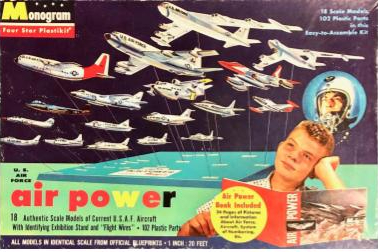
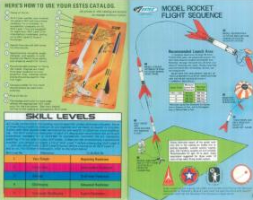

Model airplanes and rocket's
1. consening model airplane's
Model airplanes are in short replicas of airplanes whether it be military or commercial.
Aoftin ranging in Scales from 172nd to 148th Model airplanes are often plastic styrene Occasionally
packaged and sprews. Boxed in cardboard boxes and coming with Stan's
model airplanes often require Paint and Plastic cement.

nesisery model building materials
- spray paint in nursery colors
- plastic cement
- sprue cutters
- exacto knife
- tape
- spray paint primer
- gloss primer spray paint
- gloss spray paint
- clamps
- micro set
- micro sol
model rocket's
2. what you need to no a bout model rocket's
there are certain things model rocket Builder has to be concerned with one of
which are Estes model rocket engines.
In short they are single-use, compressed black powder motors built inside sturdy cardboard tubes with a clay
nozzle, solid propellant, delay charge,
and ejection charge The most reliable and safe name in this industry is the Estes model rocket company
If you want a model rocket engine it's most definitely going to be made by Estes. Additionally model rockets themselves
are made up of various materials including
plastic and Cardboard tube and various thickness of cardstock and balsa Wood fins.
also what has to paint a primer and add the included decal sheet to set rocket if one
cares about a appearance it not only are you supposed to say but I really important in your model rockets.
Another very important thing to include your model
rocket is the inclusion of an estes LaunchPad and very important to include is the estes remote
control launch system and Estes Recovery Wadding.
And another thing I forgot to mentioned it is very important that you add the included parachute to your rocket.
in addition to a parachute there are many ways one can recover a rocket such as a tumble recovery rocket be
it the inclusion of a streamer or not.



nesisery model rocket building materials
- exacto knife
- painting tape
- wood glue
- spray paint primer
- spray paint
- gloss spray paint
- micro set
- micro sol
nesisery launch materials
rocket engines
rocket wadding
estes launch controller
estes launch pad and rod
clear and barren field
zero wind (preferably)
zero airplanes (preferably)
Plastic model rocket's
3. Plastic model rocket's
Plastic model rockets are very similar to model airplanes.
In that's the are both styrene plastic models they both require about the same tools what needs to complete a modal airplane.
Including but not limited to spray paints primer and plastic cement plastic model
rockets are just that plastic replicas of real rockets Be at the Saturn 5 or the space shuttle.
often coming in launchpads you have to build the same way you have to build the rocket in question plastic
model rockets are very similar to model airplanes and plastic model rockets are fun


nesisery Plastic model rocket's
- spray paint in nursery colors
- plastic cement
- sprue cutters
- exacto knife
- tape
- spray paint primer
- gloss primer spray paint
- gloss spray paint
- clamps
- micro set
- micro sol
&mdashThis website is a helpful guyd to your model building gerny i
sincerely hope this website hopes you on your model building Journey and have fun